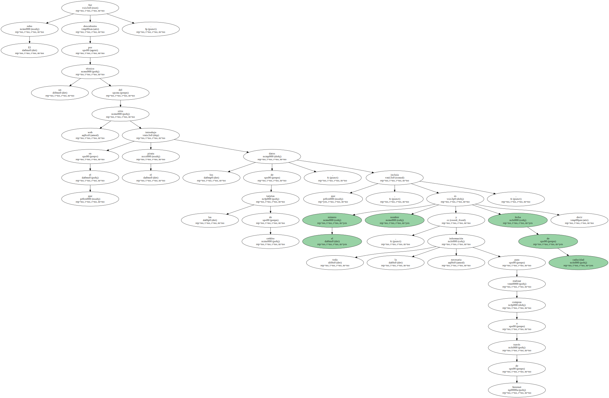
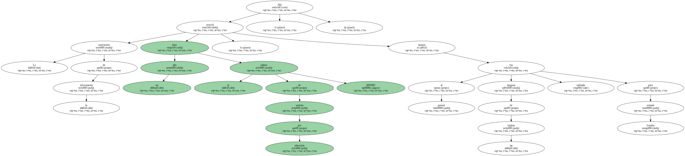
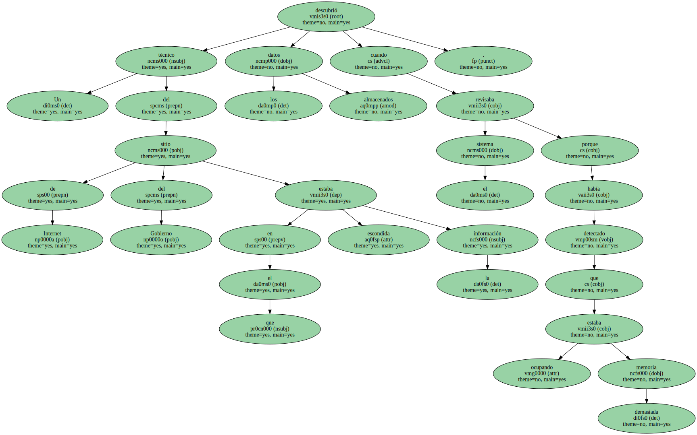
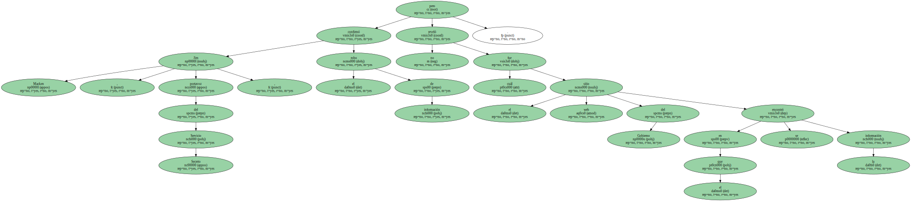
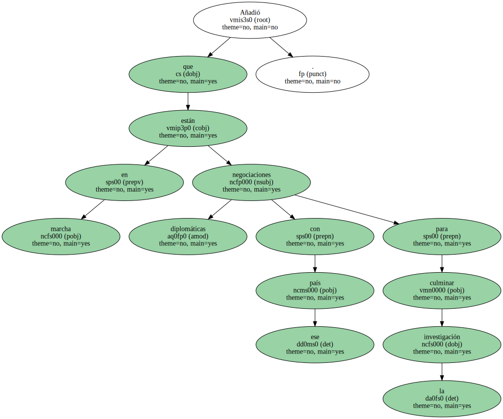
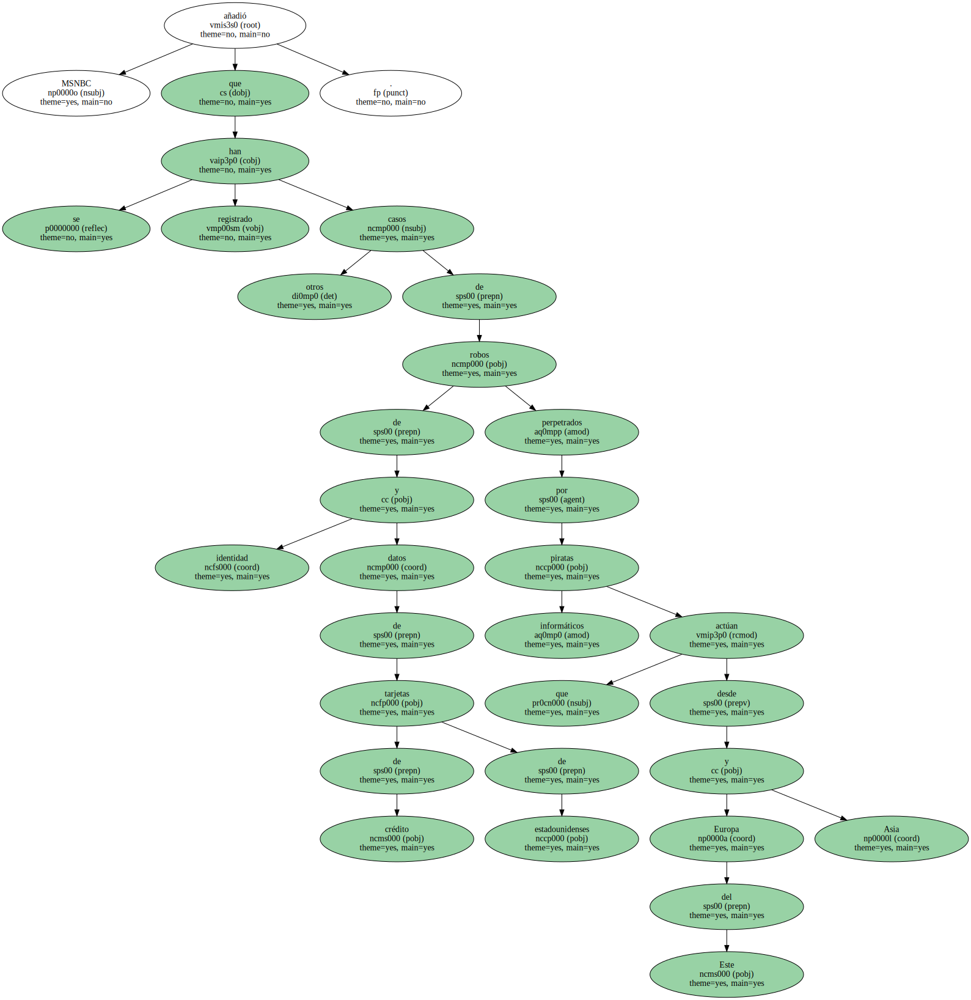
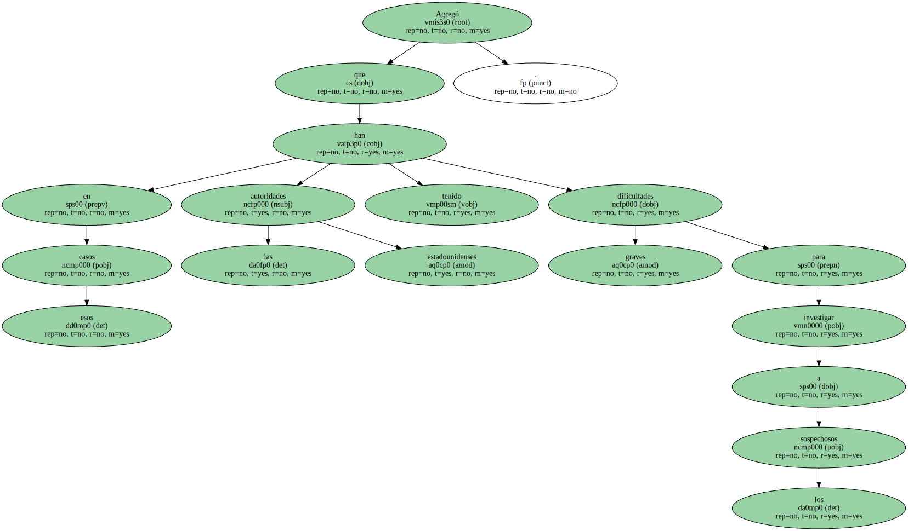

Un pirata informático consiguió robar los datos de 485.000 tarjetas de crédito de un sitio web comercial y los " ocultó " en la página de un organismo del Gobierno de Estados Unidos , confirmó hoy un portavoz del Servicio Secreto.

El robo fue descubierto por un técnico del sitio web en el que el pirata introdujo los datos de las tarjetas de crédito , que incluía el número , nombre y fecha de caducidad , es decir , toda la información necesaria para realizar compras a través de Internet.
La sustracción de la información ocurrió hace un año , aunque al parecer ninguna de las tarjetas fue utilizada para cometer fraudes , dijo la cadena de noticias por televisión MSNBC.
Un técnico del sitio de Internet del Gobierno en el que estaba escondida la información descubrió los datos almacenados cuando revisaba el sistema porque había detectado que estaba ocupando demasiada memoria.
Jim Macken , portavoz del Servicio Secreto , confirmó el robo de información pero no reveló cuál fue el sitio web del Gobierno en el que se encontró la información.
Jim Macken dijo que las investigaciones para localizar al pirata informático responsable del movimiento de información sobre las tarjetas de crédito ha conducido a los detectives hasta un país de Europa del Este.

Añadió que están en marcha negociaciones diplomáticas con ese país para culminar la investigación.
MSNBC añadió que se han registrado otros casos de robos de identidad y datos de tarjetas de crédito de estadounidenses perpetrados por piratas informáticos que actúan desde Europa del Este y Asia.
Agregó que en esos casos las autoridades estadounidenses han tenido graves dificultades para investigar a los sospechosos.
